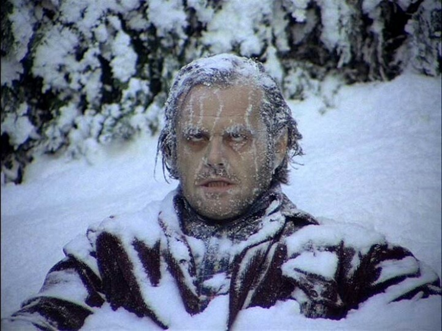

Zima ve městě není žádná zimní pohádka – sníh tu napadne párkrát do roka, a když už, většinou se během pár hodin změní v břečku. Místo romantických závějí nás čeká spíš mokro a šedé chodníky. Každé ráno škrábeme auto, brodíme se břečkou a snažíme se tvářit, že nám to úplně nerozkládá nervy. Dětem kupujeme hromady zimního oblečení, které použijí dvakrát do roka, a přesto je pořád něco mokré, ztracené nebo malé.
Většina z nás už jen počítá dny, kdy tahle městská zima konečně zmizí. Jak to přežít? Především s nadhledem. Připravit si teplý čaj, kvalitní rukavice, dobrou náladu (nebo se tu špatnou snažit alespoň trochu upozadit) a občas si připomenout, že zima ve městě je vlastně krátká a za chvíli je pryč. Ti odvážnější samozřejmě můžou vyrazit na hory a tam si tu zimu alespoň trochu "užít". Přece jen, zima na horách má svoje kouzlo. Ty tuny sněhu, rampouchy, zasněžené lesy, horká čokoláda na terásce nějaké roubenky.. To pak i člověk má chvíli pocit, že je zima opravdu fajn:)
Když nemáte rádi zimu, není potřeba si ji ještě víc komplikovat. Nesnažte se nutit do dlouhých pobytů venku, pokud vám chlad nedělá dobře, a zbytečně se neporovnávejte s lidmi, kteří nadšeně vyrážejí na běžky za každého počasí. A hlavně se nesnažte „přetrpět“ všechno sami; dopřejte si malé radosti, teplo a klid, které vám pomůžou zimní období zvládnout snáz
Jsem Veronika, máma tří dětí, co bydlí v Praze. Momentálně dokončuju Digitální akademii a připravuju se na nový začátek. Po 8 letech na mateřský jsem poměrně utahaná, vyhořelá a změnu potřebuju jako prase drbání. Doufám, že po Akademii najdu uplatnění a naplní se vize mojí práce - pracovat částečně z domova, na zkrácený úvazek, využít aspoň nějaký cizí jazyk. Jelikož fakt nemám ráda zimu (kromě té romantické ladovské na horách a i to zvládnu jen pár dní), doufám, že třeba časem budeme moct trávit zimní měsíce někde v teple. Protože šumění moře/oceánu, nohy od písku a slaný vzduch je pro mě ta největší psychická pohoda.
Kdybyste se chtěli ozvat a třeba pokecat o čemkoliv, zde je můj email:
✉ zabakor@tiscali.gov